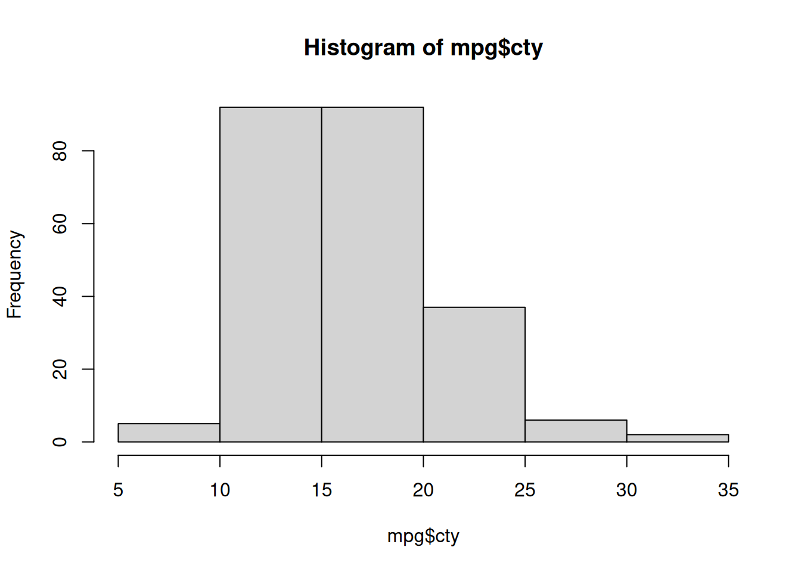
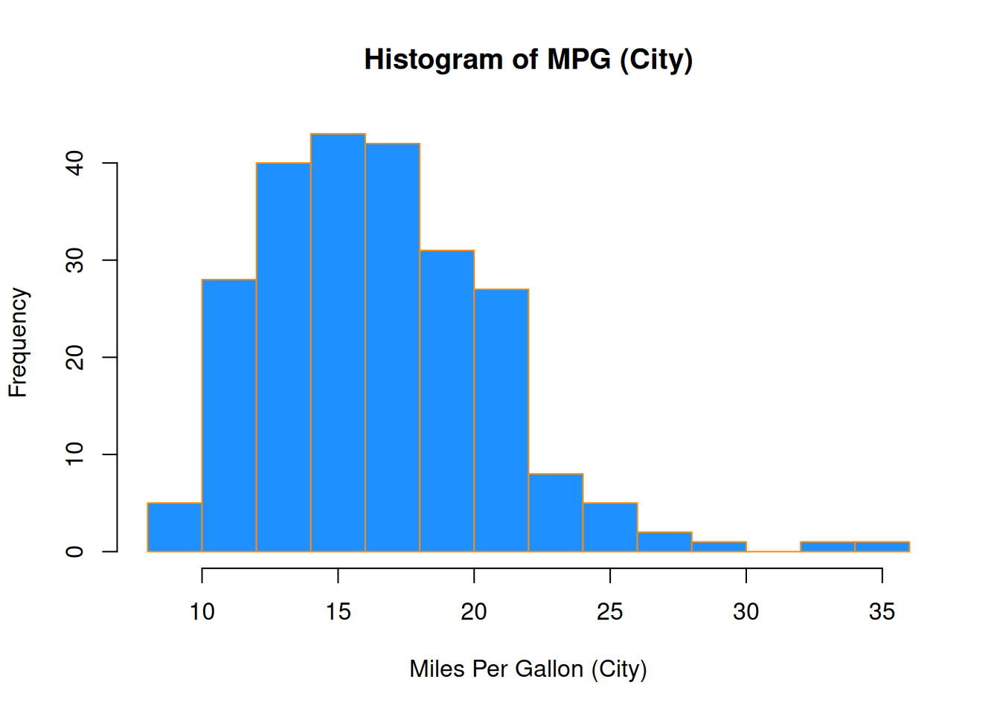
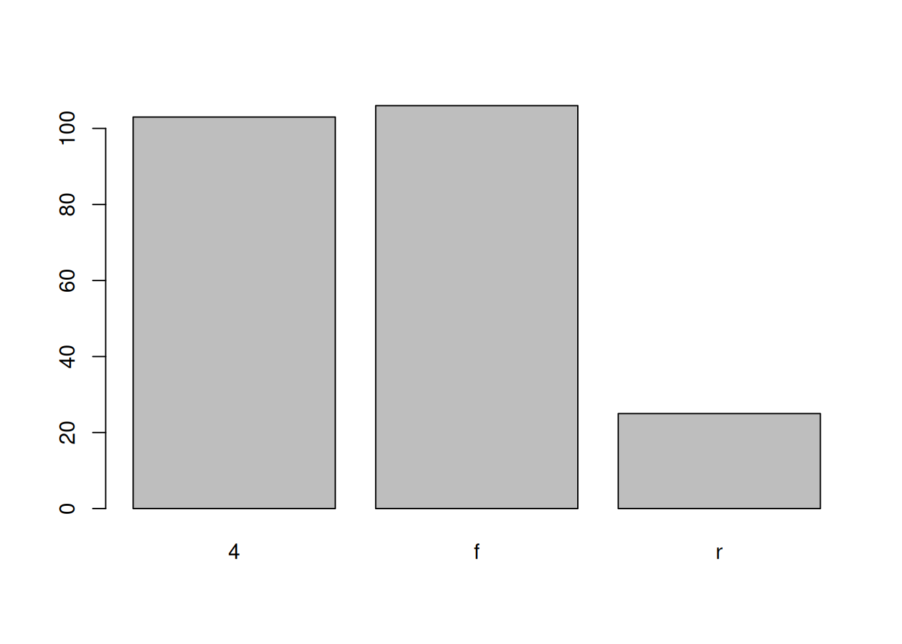
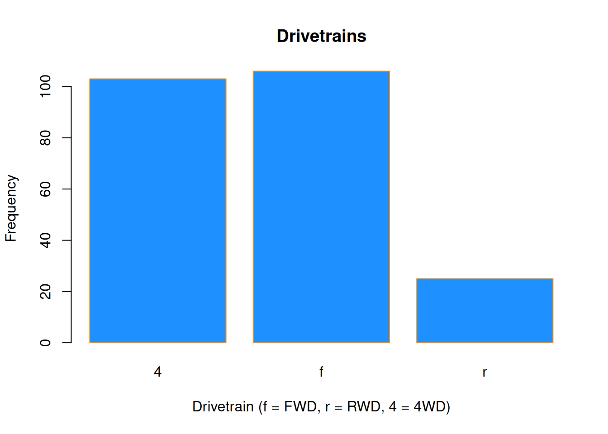
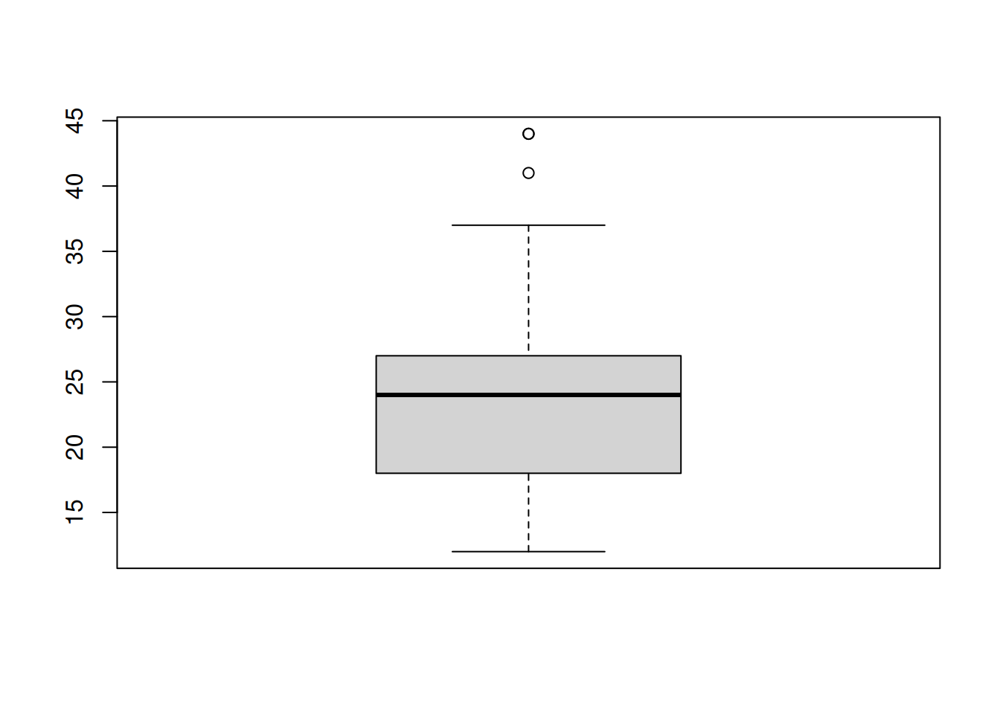
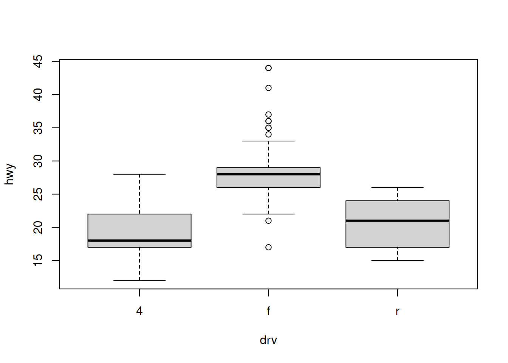
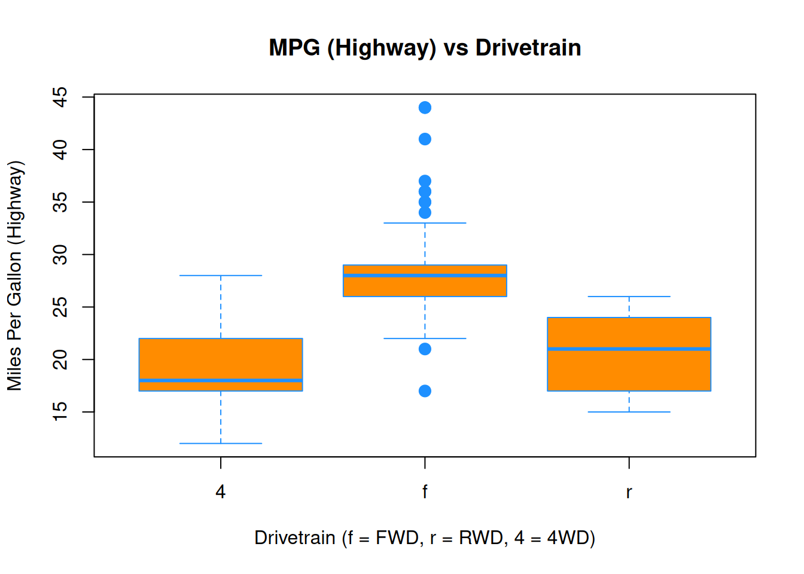
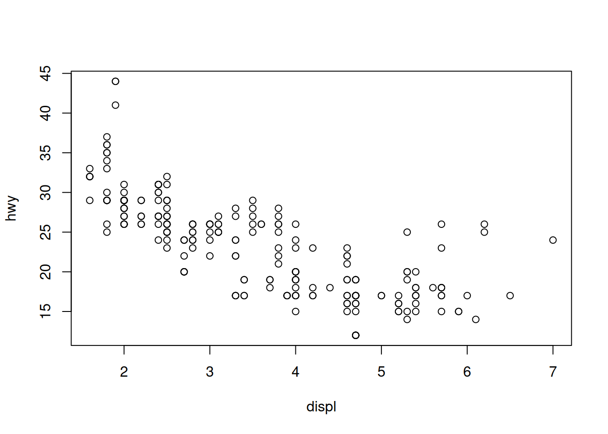
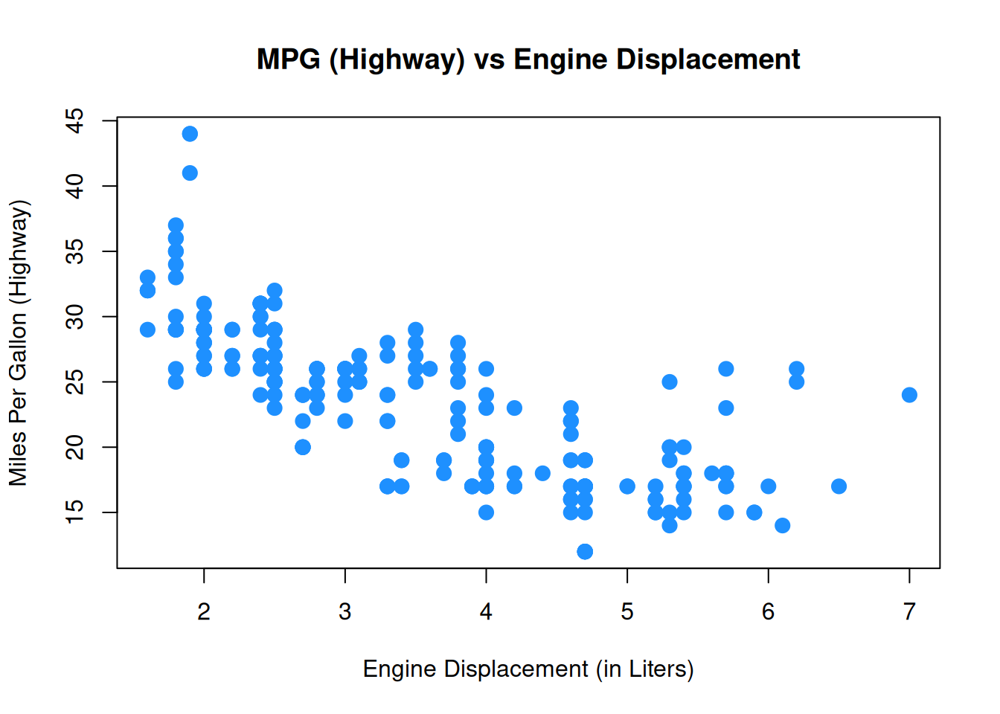

Show the code
library(ggplot2)R has built-in functions for a large number of summary statistics. For numeric variables, we can summarize data with the center and spread. We’ll again look at the mpg dataset from the ggplot2 package.
library(ggplot2)| Measure | R |
Result |
|---|---|---|
| Mean | mean(mpg$cty) |
16.8589744 |
| Median | median(mpg$cty) |
17 |
| Measure | R |
Result |
|---|---|---|
| Variance | var(mpg$cty) |
18.1130736 |
| Standard Deviation | sd(mpg$cty) |
4.2559457 |
| IQR | IQR(mpg$cty) |
5 |
| Minimum | min(mpg$cty) |
9 |
| Maximum | max(mpg$cty) |
35 |
| Range | range(mpg$cty) |
9, 35 |
For categorical variables, counts and percentages can be used for summary.
table(mpg$drv)
4 f r
103 106 25 table(mpg$drv) / nrow(mpg)
4 f r
0.4401709 0.4529915 0.1068376 Now that we have some data to work with, and we have learned about the data at the most basic level, our next task is to visualize the data. Often, a proper visualization can illuminate features of the data that can inform further analysis.
We will look at four methods of visualizing data that we will use throughout the course:
When visualizing a single numerical variable, a histogram will be our go-to tool, which can be created in R using the hist() function.
hist(mpg$cty)
The histogram function has a number of parameters which can be changed to make our plot look much nicer. Use the ? operator to read the documentation for the hist() to see a full list of these parameters.
hist(mpg$cty,
xlab = "Miles Per Gallon (City)",
main = "Histogram of MPG (City)",
breaks = 12,
col = "dodgerblue",
border = "darkorange")
Importantly, you should always be sure to label your axes and give the plot a title. The argument breaks is specific to hist(). Entering an integer will give a suggestion to R for how many bars to use for the histogram. By default R will attempt to intelligently guess a good number of breaks, but as we can see here, it is sometimes useful to modify this yourself.
Somewhat similar to a histogram, a barplot can provide a visual summary of a categorical variable, or a numeric variable with a finite number of values, like a ranking from 1 to 10.
barplot(table(mpg$drv))
barplot(table(mpg$drv),
xlab = "Drivetrain (f = FWD, r = RWD, 4 = 4WD)",
ylab = "Frequency",
main = "Drivetrains",
col = "dodgerblue",
border = "darkorange")
To visualize the relationship between a numerical and categorical variable, we will use a boxplot. In the mpg dataset, the drv variable takes a small, finite number of values. A car can only be front wheel drive, 4 wheel drive, or rear wheel drive.
unique(mpg$drv)[1] "f" "4" "r"First note that we can use a single boxplot as an alternative to a histogram for visualizing a single numerical variable. To do so in R, we use the boxplot() function.
boxplot(mpg$hwy)
However, more often we will use boxplots to compare a numerical variable for different values of a categorical variable.
boxplot(hwy ~ drv, data = mpg)
Here we used the boxplot() command to create side-by-side boxplots. However, since we are now dealing with two variables, the syntax has changed. The R syntax hwy ~ drv, data = mpg reads “Plot the hwy variable against the drv variable using the dataset mpg.” We see the use of a ~ (which specifies a formula) and also a data = argument. This will be a syntax that is common to many functions we will use in this course.
boxplot(hwy ~ drv, data = mpg,
xlab = "Drivetrain (f = FWD, r = RWD, 4 = 4WD)",
ylab = "Miles Per Gallon (Highway)",
main = "MPG (Highway) vs Drivetrain",
pch = 20,
cex = 2,
col = "darkorange",
border = "dodgerblue")
Again, boxplot() has a number of additional arguments which have the ability to make our plot more visually appealing.
Lastly, to visualize the relationship between two numeric variables we will use a scatterplot. This can be done with the plot() function and the ~ syntax we just used with a boxplot. (The function plot() can also be used more generally; see the documentation for details.)
plot(hwy ~ displ, data = mpg)
plot(hwy ~ displ, data = mpg,
xlab = "Engine Displacement (in Liters)",
ylab = "Miles Per Gallon (Highway)",
main = "MPG (Highway) vs Engine Displacement",
pch = 20,
cex = 2,
col = "dodgerblue")